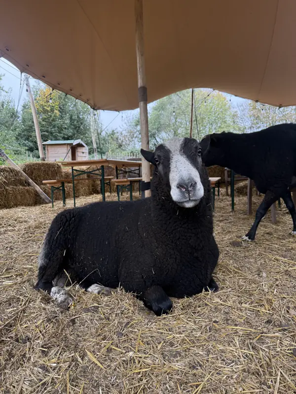

Workshops
Van schaap tot vilt
Af en toe nodig ik een maker uit op de boerderij. Dan werken we een namiddag met onze handen, met wat de boerderij ons geeft.
Vilten met wol van eigen schapen
Wol, je handen en wat geduld. Meer is het eigenlijk niet. Samen met wolkunstenares Els Vijverman leer je hoe losse vezels door wrijven en rollen stilaan een stevig stukje vilt worden. De wol komt gewoon van hier, van onze schapen.
Iedereen gaat naar huis met een klein vilten werkje. Kom met je kind, of gun jezelf een namiddag waarin je handen het werk doen en je hoofd even rust krijgt.
Kinderen vanaf een jaar of 7 vilten zelf mee. Jongere kindjes helpen vooral bij de schapen en de wol, en doen het fijne werk samen met mama of papa.

Volgende workshops
Nieuwe workshops kondig ik aan via Instagram. Wil je persoonlijk een seintje krijgen? Laat het weten, dan zet ik je op de lijst.